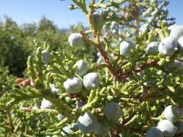
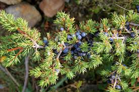
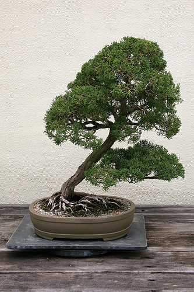

Juniperus osteosperma
The Utah Juniper is listed as a shrub or small tree.
back to top

- native: southwestern United States
- height: 3 to 6 meters (10 to 20 feet)
- seeds: single
- leaves: whorls of three, 1-2mm long, 1-1.5mm wide
- fruit: berry-like cones, blue-brown (8-13mm diameter)
Juniperus communis
The common juniper is listed as a shrub or small tree.
back to top

- native: arctic region to 30°N latitude
- height: from a shrub to 16 meters (50 feet)
- seeds: single
- leaves: needle-like, whorls of three
- fruit: berry-like cones, purple-black, spherical (4-12mm diameter)
Juniperus chinensis
The Chinese Juniper, also known as bonsai juniper, is listed as a shrub or small tree.
back to top

- native: northeast Asia
- height: 1-20 meters (66 feet)
- seeds: 2 to 4
- leaves: scale-like, 1.5-3mm long
- fruit: berry-like, blue-black, spherical (7-12mm diameter)